A generator of Berlin School music
Version 0.1.0 · 469 parameters · manual built 25.09.2026
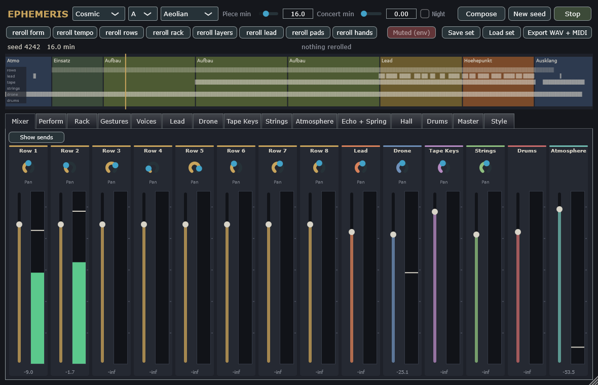
Ephemeris composes and plays long pieces in the manner of the modern Berlin School: sequencer lines of different lengths turning against each other over a common root, a bass that holds the ground, tape choirs and string machines, a lead that sings over the peak, the room of a tape echo and a long hall. There are no samples. Every sound is synthesised by the engine, and every note is decided by the composer.
The same seed always gives the same piece. A piece is a seed, a style, a length and a handful of rerolls, which is what a set file stores and what you can hand to someone else. The standalone and the plugin play what the offline renderer plays, sample for sample.
An ephemeris is the table that gives the positions of the heavenly bodies for every date. A sequencer is such a table, and the music here is made of orbits of different lengths around one root that meet again only now and then. The Rack page draws them that way.
Style, key and scale choose the piece's character: Cosmic, Doom, Melodic, Modern and Drift are five style profiles with their own tempi, forms, layers and spaces. Piece min is the length of one piece; Concert min above zero strings pieces together into a concert that travels through related keys. With Morph To (on the Master page) a concert also wanders from its style to another: each piece is composed between the two, the further into the concert the nearer the second. Concert Arc gives a concert an arc of tension: its first and last pieces quieter -- fewer rows at the peak, the lead and the drums rarer, the hands slower, the sound a little darker -- and the pieces around 60 % of the way the densest. Compose writes a piece with the current seed, New seed draws another one, Play starts and stops the standalone (in a host the host's transport plays).
Night turns a concert (up to twelve hours) into a night set, played as a DJ plays one. The pieces last eight to fifteen minutes and their styles climb and descend a ladder -- Drift, Doom, Cosmic, Modern, Melodic -- one rung at a time, along waves of energy of 80 to 120 minutes over the night's own arc (the densest around 60 % of the way), never three pieces of one style in a row; the style in the top bar is the first. No piece ends in silence: each one's last 32 to 40 bars are an outro in which its rows play on, and the next piece starts over it, on the other half of the rack (rows 1-4 and 5-8 take turns). First its intro, 8 to 16 bars -- the drone slides into the new key, a fourth or a fifth away (now and then a minor third), with its pads and its air -- then its bass, alone for eight bars: there the old piece's counter rows stop and its bass gives up its lows on the EQ and recedes, as a DJ swaps the bass. Then the new main sequence comes in and fills up while the old one recedes to its end. The mix is beat-matched: the new piece takes the tempo the old one ended in, within 6 BPM of its style's range, and ramps to its own only after the handover (16 bars for every 4 BPM). The level stays the old piece's until its end, and Doom and Drift are brought 1.2 dB nearer to the louder styles. A piece of a night set has at most four rows. Composing eight hours takes about half a second; export writes the whole night.
Scale offers eight modes: Aeolian, Dorian, Phrygian, Harmonic Minor, Minor Pentatonic, Mixolydian, Lydian and Locrian. The harmony is the Berlin School's: a centre held by the drone and the bass, chords that change rarely. From the first build on, a chord track moves the bass row alone under the unchanged sequence -- the counter rows are heard anew over the wandering bass -- in one of four ways the style draws: one chord for the whole phase, a pendulum between two (i-VII, i-VI, i-iv, i-IV in Dorian, i-bII in Phrygian), a loop of three or four (i-VI-VII, i-VII-VI, i-iv-VI ...) or a walk by a table of chances. Drift and Modern stay longest on one chord, Melodic changes every four to eight bars. The tape keys and the strings build their chords on the same degree: the choirs mostly plain triads, the strings open fifths, triads, sus chords, add9, stacked fourths and m9 as well. The transposer moves the whole sequence a fifth up, a fourth up or a minor third down and back, only on the plateau and at the peak, while the drone stays on the centre. At some peaks Aeolian brightens to Dorian, in some breakdowns it darkens to Phrygian, and every piece ends on the open fifth. A later phase may move its key by a fourth, a tone or a third, and take a minor mode of its own, as the parts of a suite do.
The reroll buttons draw one part of the piece again and leave everything else as it was, to the note: the form, the tempo, the rows' shapes, the rack's patterns, the layers, the lead, the chords and pads, and the hands on the knobs. Save set and Load set keep a piece as a small text file; Export writes the piece offline as a 24-bit WAV and a MIDI file beside it, with the gestures as controllers -- and, if you choose so, the stems: a WAV per channel strip and one for the rooms in a folder beside the mix, whose sum is the mix before the master.
Below, the arrange view shows the sections of the piece -- the atmosphere at the start, the entry of the rows, the builds, the lead, the peak, the bridges, the fade -- with the playhead. Click to jump.
A channel strip per source, in the order the engine mixes them: the eight rows, the lead, the drone, the tape keys, the string machine, the drums and the atmosphere. Each strip has its pan (where the source has one), its sends to the tape echo and to the hall -- the rows also to the second echo -- its fader and its meter. The controls are the same parameters the sources' own pages show. Show sends unfolds the sends of every strip (the echoes, the early reflections, the blend room, the hall, the shimmer); folded, the console shows level, pan and meter only, with long faders.
The composer sets the stereo field for each piece: the bass in the middle, the main sequence near it, the other counter rows 30 to 50 % out to alternating sides, the lead a little off the middle. It keeps the bass dry and the tape keys and strings out of the echo, and sends the counter rows after the first into the second echo, so each layer of the sequence has a delay time of its own.
Every source has a Low Cut on its own page: a gentle high pass (12 dB per octave) that keeps it out of the bands below its own, after the production guide's frequency plan. Only the bass row reaches down to 30 Hz; the composer starts the main sequence at 90 Hz and the other counter rows at 200 Hz; the lead and the tape keys start at 150 Hz, the strings at 200 Hz, the atmosphere at 120 Hz, the drone at 40 Hz (its lowest note is at 82 Hz), the drums at 25 Hz. Mud between 200 and 500 Hz and a crowded bass are what make a long piece tiring; this is where they are kept away.
Punch (on the rows) lifts a row's attacks by up to 6 dB and leaves its sustain: the composer gives it to the main sequence, which keeps it in front. Distance (on the rows, the lead, the drone, the tape keys and the strings) places a source between near (0) and the horizon (1) with every cue at once, so nothing is near in its level and far in the hall: at 0.3 it is 4 dB quieter, its highs end at 10 kHz and it sends a little more to the hall; at 0.6 it is 10 dB back, dark from 5 kHz and well in the hall; at 1 it is 24 dB back, 2.5 kHz and almost only hall. The composer moves the bass with it: at each entry it comes in from 0.7 over 45 seconds, in the breakdown it recedes over up to two minutes, and in the coda before it stops -- an approach and a leaving instead of a fader ride.
The rows also make room for themselves: while they play, the pads (strings and tape keys) step back in their middle, by up to Cascade Duck (Master page, 2.5 dB) -- in six bands between 350 Hz and 4.8 kHz, each only where the rows have energy in it -- and the pads in turn push the atmosphere back the same way: the pads stay full while the sequence rests. The rows reach the mix through a resonance suppressor (Resonance Tamer, Master page): in the same six bands, a band that stands more than 6 dB over the others is pulled back, up to 3:1, so a filter's resonance sweeping through never sticks out or tires the ear.
The meter reads what the source puts into the mix after its fader and pan: a green bar for the RMS level with a release of 300 ms, turning amber above -6 dBFS and red above 0, and a peak line that holds for a second and a half before it falls at 20 dB per second. The figure under the meter is the held peak. A strip that shows -inf is not playing at the moment.
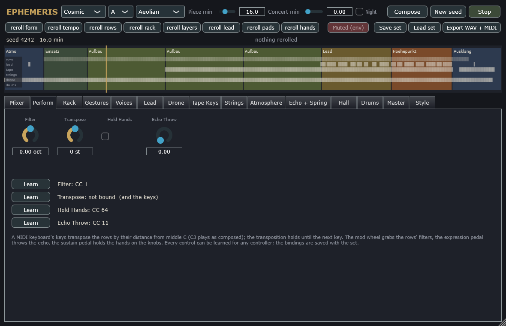
The performer's controls act on the piece as it plays, and at their defaults they do nothing at all: the piece is then exactly as composed. Filter moves the rows' filters up to two octaves either way, as a hand on the cutoff knobs of a modular would. Transpose is the transposition key: every note that starts after a change comes in transposed; notes that sound keep their pitch. Hold Hands lets go of the knobs: the gestures the composer wrote stand where they are until you release it. Echo Throw sends every source into the tape echo and raises the echo's feedback with it, for a dub throw at the end of a phrase.
A MIDI keyboard plays the transposition key directly: a key transposes by its distance from middle C and holds until the next key, as the transposer of a sequencer did. The mod wheel grabs the filters, the expression pedal throws the echo, the sustain pedal holds the hands. Learn binds any controller to any of the four; the bindings are saved with the plugin's state.
A row cannot be mutated live: the piece is composed before it plays. To hear the rack with other patterns, reroll the rack.
| Control | Key | Range | Default |
|---|---|---|---|
| Filter | perform.filter | -2 .. 2 oct | 0 oct |
| Transpose | perform.transpose | -12 .. 12 st | 0 st |
| Hold Hands | perform.hold | off / on | off |
| Echo Throw | perform.throw | 0 .. 1 | 0 |
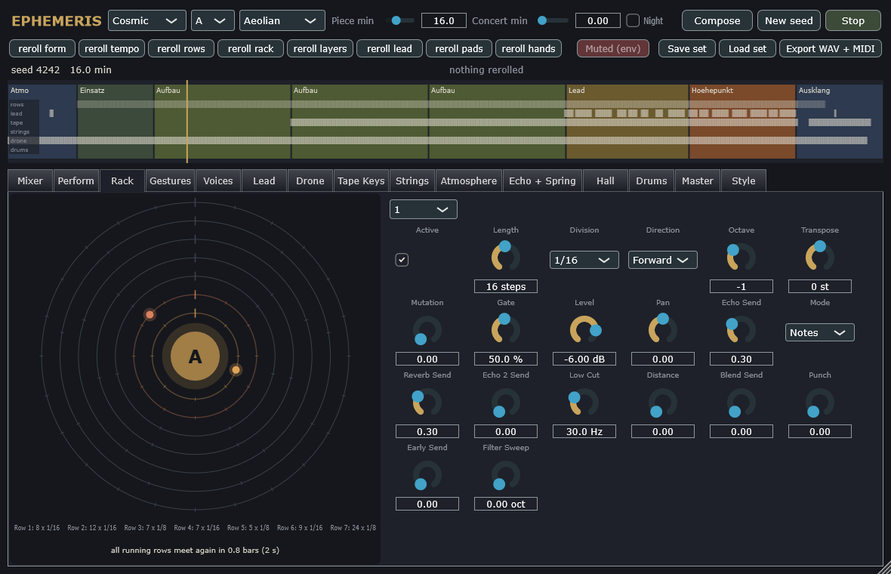
On the left, the orrery. Every row that plays notes is a planet on an orbit, the bass innermost; one turn is one cycle of the row, its length in steps times its step. The top of every orbit is the row's first step. When running rows stand there together, a line of light rises from the centre: a conjunction, the moment the patterns come round together. Under the orbits, each row's cycle and the time until all running rows meet again. The sun in the middle is the transposer: its letter is the root the rows play on at the moment, and it moves when the transposer does.
The composer uses the conjunctions: a build, which brings in a new counter row, ends where that row and the bass row begin their cycles together again, if such a bar is near.
On the right, the rows' parameters: length and step, direction, octave and transposition, the chance of a mutation (a Turing machine's shift register) -- weighed once every sixteen bars, so that a pattern holds at least that long, as a hypnotic one must -- the gate, level, pan and sends, the filter sweep, and the mode -- notes, or the transposer that moves the others. The composer sets the rows for each piece; the values here are what a piece starts from.
The composer draws each row from one of the Berlin School's figures: the octave pendulum, the fifth anchor, the 3+1 pulse (three notes and a rest), stairs up and down, the mode's colour (the note that makes Dorian or Phrygian heard), the Phrygian push, the arpeggio spiral from i to VI, or a canon of the row before -- three steps later or a fifth up -- besides the older free rules. The bass ostinato has eight or sixteen steps and a long gate; every eight steps have one to three rests (the bass none to two), the first always sounds on the root or the fifth, accents fall on the first and fifth step or 3+3+2. The bass and the main sequence hold the ground: they change at half the style's rate and never by chance. On the other counter rows some steps are probability gates that sound on some rounds only -- Modern has the most, Cosmic and Doom the fewest; a few steps, the most in Drift and Modern, play a new note each time round, drawn through a quantiser from the root, fifth, octave, seventh, fourth and third of the mode. A counter row comes in with six of its steps silent and fills a step every two bars. On the plateau and at the peak a few steps are ratcheted into quick triggers, at some peaks the eighths row doubles its pulse, and in the breakdown and the coda the bass loses its steps one by one.
What makes a sequence hypnotic is less its notes than its timbre moving against them. Every row carries a modulation sequencer beside its notes: a lane of 3, 5, 7 or 12 steps -- never the row's own length -- that opens the filter on a few notes and closes it on others, so the accents of timbre wander through the pattern and meet it again only after many rounds (Modern the deepest, Drift the shallowest). Over that, Filter Sweep turns the row's cutoff slowly up and down, a sine of its own period between 39 and 79 seconds for every row, never in step with the bars or with each other: the long openings and closings of the Berlin School. The composer gives the main sequence the widest sweep and a squelchy voice -- more resonance, a short deep filter envelope, strong accents -- the bass a round one and the other rows something between; Motion on the Master page scales every sweep with the other slow movements.
| Control | Key | Range | Default |
|---|---|---|---|
| Active | rowN.active | off / on | on |
| Length | rowN.length | 1 .. 32 steps | 16 steps |
| Division | rowN.division | 1/4, 1/8, 1/8 T, 1/16, 1/16 T, 1/32, 1 Bar, 2 Bars, 4 Bars | 1/16 |
| Direction | rowN.direction | Forward, Backward, Pendulum, Random Walk | Forward |
| Octave | rowN.octave | -3 .. 3 | -1 |
| Transpose | rowN.transpose | -12 .. 12 st | 0 st |
| Mutation | rowN.mutation | 0 .. 1 | 0 |
| Gate | rowN.gate | 5 .. 100 % | 50 % |
| Level | rowN.level | -60 .. 6 dB | -6 dB |
| Pan | rowN.pan | -1 .. 1 | 0 |
| Echo Send | rowN.echo | 0 .. 1 | 0.3 |
| Mode | rowN.mode | Notes, Transposer | Notes |
| Reverb Send | rowN.reverb | 0 .. 1 | 0.3 |
| Echo 2 Send | rowN.echo2 | 0 .. 1 | 0 |
| Low Cut | rowN.low_cut | 10 .. 500 Hz | 30 Hz |
| Distance | rowN.distance | 0 .. 1 | 0 |
| Blend Send | rowN.blend | 0 .. 1 | 0 |
| Punch | rowN.punch | 0 .. 1 | 0 |
| Early Send | rowN.early | 0 .. 1 | 0 |
| Filter Sweep | rowN.sweep | 0 .. 2 oct | 0 oct |
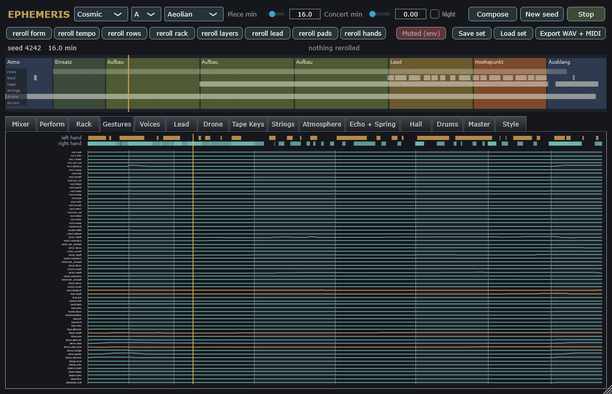
What the player's two hands do to the knobs over the whole piece. Every knob the composer moves has a lane: its offset from where you set the knob, as a curve over the piece, from -1 to +1 of the knob's range -- the filter of the bass row opening towards the peak and closing in the coda, the counter rows' filters, the lead's, the echo's feedback thrown now and then, the wind rising and falling in the atmosphere. The colour is the hand that moves the knob.
Above the lanes, a bar per hand shows where it is busy. A player has two hands, and the composer keeps to that: never more than two knobs move at once, and a hand finishes one move before it starts the next. The sections of the piece lie behind the lanes, the playhead runs over them, and a click jumps there. The hands can be let go on the Perform page (Hold Hands): every knob then stays where the curve has it.
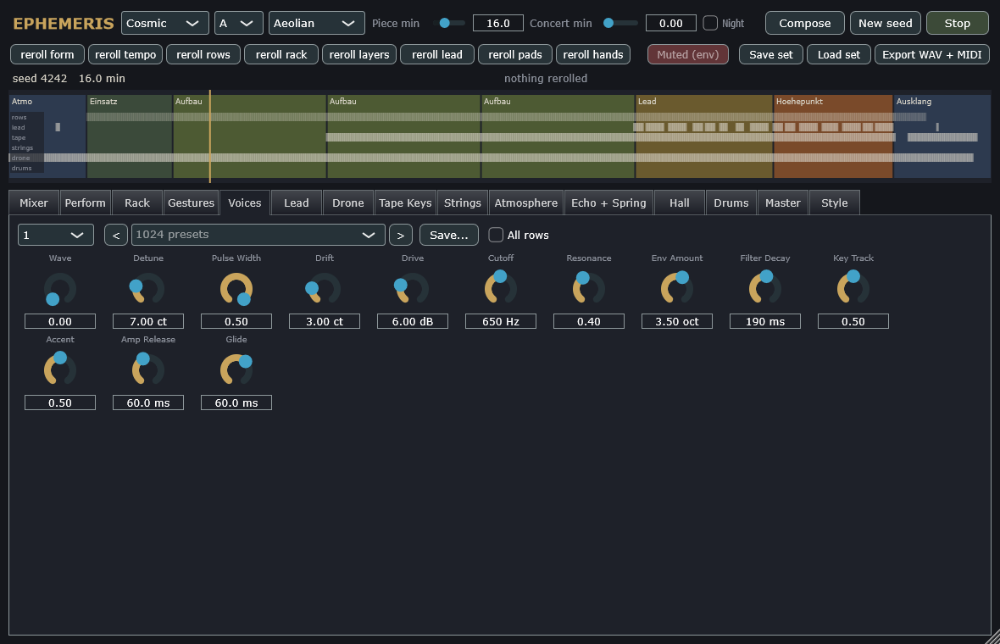
Each row plays its own modular voice: two drifting oscillators (a sawtooth blended into a pulse, the second detuned), a mixer driven into a soft saturation, a four-pole transistor ladder at twice the sample rate, two envelopes and glide. The oscillators run freely and are never reset on a note, and each wanders slowly in pitch, as analogue oscillators do; the Drift knob sets how far.
Presets. Every synth page -- the voices, the lead, the drone, the tape keys, the strings, the drums and the atmosphere -- has 1024 factory presets above its knobs, in sixteen groups of sixty-four ("Ladder Bass", "Glass Arp", "Cathedral Choir", "Slow Swell", "Solar Wind" ...); the arrows step through them. Each name is two words: the first runs from dark to bright ("Umbral" ... "Radiant"), the second is the group's own, so "Umbral Keel" is the darkest and "Radiant Piston" the brightest of the ladder basses. On the voices page a preset goes to the row chosen on the left. Save... keeps the synth's knobs as they stand under a name of your own (a small text file in the application data, Ephemeris/Presets); they appear under "User". All rows, on the voices page, sends a preset to every row at once. The effect pages (Echo + Spring, Hall) keep presets of your own too, each the whole page -- all its rooms -- as it stands. A preset sets the sound, never the mix: level, pan, the sends, the low cut, the distance and the drone's auto pan stay, and so do the atmosphere's amounts, which the composer moves. Nor does it put a synth out of tune with the rest: the drone and the bass groups keep their oscillators within a cent or three of each other (the pure foundation), the others within twelve, the lead's vibrato and the tapes' wobble stay inside their usual bounds, and no preset transposes anything.
The knobs the player's hands move during a piece -- cutoff, resonance, envelope amount, decay -- are moved by the composer's gestures as offsets from where you set them, so the ranges you choose keep their meaning.
| Control | Key | Range | Default |
|---|---|---|---|
| Wave | voiceN.wave | 0 .. 1 | 0 |
| Detune | voiceN.detune | 0 .. 30 ct | 7 ct |
| Pulse Width | voiceN.pw | 0.05 .. 0.5 | 0.5 |
| Drift | voiceN.drift | 0 .. 15 ct | 3 ct |
| Drive | voiceN.drive | 0 .. 24 dB | 6 dB |
| Cutoff | voiceN.cutoff | 30 .. 16000 Hz | 650 Hz |
| Resonance | voiceN.resonance | 0 .. 1 | 0.4 |
| Env Amount | voiceN.env_amount | 0 .. 6 oct | 3.5 oct |
| Filter Decay | voiceN.decay | 15 .. 2000 ms | 190 ms |
| Key Track | voiceN.keytrack | 0 .. 1 | 0.5 |
| Accent | voiceN.accent | 0 .. 1 | 0.5 |
| Amp Release | voiceN.amp_decay | 5 .. 2000 ms | 60 ms |
| Glide | voiceN.glide | 1 .. 500 ms | 60 ms |
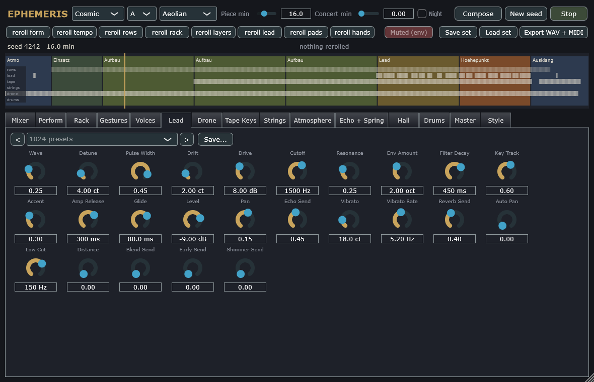
The lead is the same voice as a row's, with vibrato that comes in over the first half second of a held note, as a hand reaches the wheel. It plays in its own section and over the peak: phrases of four to eight bars with rests of two to four between them, on the pentatonic of the moment (with the sixth where the mode is Dorian), chord tones on the strong beats, glides from the tone below, repeats of its own phrases, and an end on the fifth or the minor third rather than the root. It plays a little behind the beat, as a player over a machine does.
| Control | Key | Range | Default |
|---|---|---|---|
| Wave | lead.wave | 0 .. 1 | 0.25 |
| Detune | lead.detune | 0 .. 30 ct | 4 ct |
| Pulse Width | lead.pw | 0.05 .. 0.5 | 0.45 |
| Drift | lead.drift | 0 .. 15 ct | 2 ct |
| Drive | lead.drive | 0 .. 24 dB | 8 dB |
| Cutoff | lead.cutoff | 30 .. 16000 Hz | 1500 Hz |
| Resonance | lead.resonance | 0 .. 1 | 0.25 |
| Env Amount | lead.env_amount | 0 .. 6 oct | 2 oct |
| Filter Decay | lead.decay | 15 .. 2000 ms | 450 ms |
| Key Track | lead.keytrack | 0 .. 1 | 0.6 |
| Accent | lead.accent | 0 .. 1 | 0.3 |
| Amp Release | lead.amp_decay | 5 .. 2000 ms | 300 ms |
| Glide | lead.glide | 1 .. 500 ms | 80 ms |
| Level | lead.level | -60 .. 6 dB | -9 dB |
| Pan | lead.pan | -1 .. 1 | 0.15 |
| Echo Send | lead.echo | 0 .. 1 | 0.45 |
| Vibrato | lead.vibrato | 0 .. 100 ct | 18 ct |
| Vibrato Rate | lead.vibrato_rate | 1 .. 10 Hz | 5.2 Hz |
| Reverb Send | lead.reverb | 0 .. 1 | 0.4 |
| Auto Pan | lead.auto_pan | 0 .. 1 | 0 |
| Low Cut | lead.low_cut | 10 .. 500 Hz | 150 Hz |
| Distance | lead.distance | 0 .. 1 | 0 |
| Blend Send | lead.blend | 0 .. 1 | 0 |
| Early Send | lead.early | 0 .. 1 | 0 |
| Shimmer Send | lead.shimmer | 0 .. 1 | 0 |
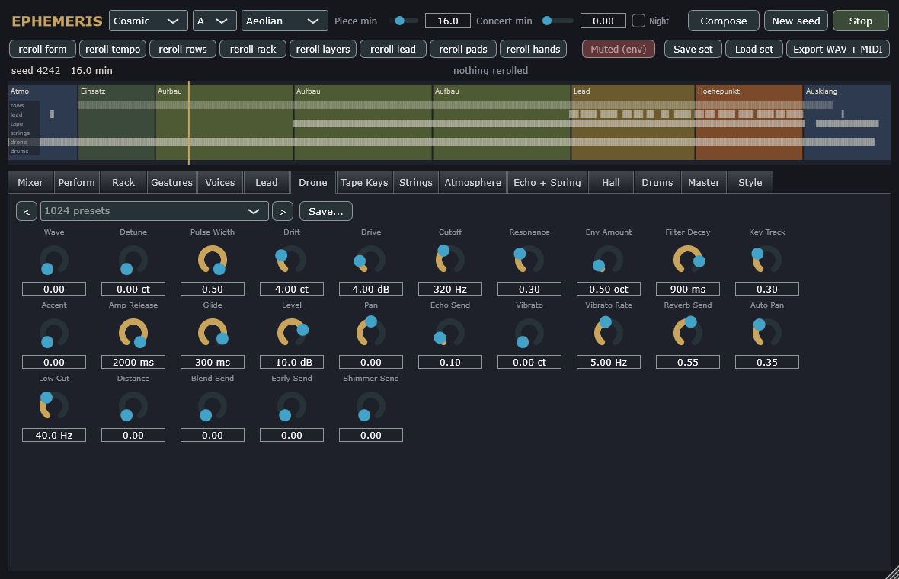
The drone is the ground under the whole piece: the root, low, held from the start to the fading coda, following the key when a phase changes it. It is a modular voice as well and has the lead's table. Auto Pan lets it wander slowly across the stereo field, on a sine of 0.05 Hz (twenty seconds from one side to the other and back); the lead has the knob as well, at zero. The drone's two oscillators are not detuned against each other, nor are the bass row's: the foundation of a piece stays in pure octaves and fifths, without a slow cloud of beating in the middle over the minutes; the detune belongs to the counter rows, the lead and the pads.
| Control | Key | Range | Default |
|---|---|---|---|
| Wave | drone.wave | 0 .. 1 | 0 |
| Detune | drone.detune | 0 .. 30 ct | 0 ct |
| Pulse Width | drone.pw | 0.05 .. 0.5 | 0.5 |
| Drift | drone.drift | 0 .. 15 ct | 4 ct |
| Drive | drone.drive | 0 .. 24 dB | 4 dB |
| Cutoff | drone.cutoff | 30 .. 16000 Hz | 320 Hz |
| Resonance | drone.resonance | 0 .. 1 | 0.3 |
| Env Amount | drone.env_amount | 0 .. 6 oct | 0.5 oct |
| Filter Decay | drone.decay | 15 .. 2000 ms | 900 ms |
| Key Track | drone.keytrack | 0 .. 1 | 0.3 |
| Accent | drone.accent | 0 .. 1 | 0 |
| Amp Release | drone.amp_decay | 5 .. 2000 ms | 2000 ms |
| Glide | drone.glide | 1 .. 500 ms | 300 ms |
| Level | drone.level | -60 .. 6 dB | -10 dB |
| Pan | drone.pan | -1 .. 1 | 0 |
| Echo Send | drone.echo | 0 .. 1 | 0.1 |
| Vibrato | drone.vibrato | 0 .. 100 ct | 0 ct |
| Vibrato Rate | drone.vibrato_rate | 1 .. 10 Hz | 5 Hz |
| Reverb Send | drone.reverb | 0 .. 1 | 0.55 |
| Auto Pan | drone.auto_pan | 0 .. 1 | 0.35 |
| Low Cut | drone.low_cut | 10 .. 500 Hz | 40 Hz |
| Distance | drone.distance | 0 .. 1 | 0 |
| Blend Send | drone.blend | 0 .. 1 | 0 |
| Early Send | drone.early | 0 .. 1 | 0 |
| Shimmer Send | drone.shimmer | 0 .. 1 | 0 |
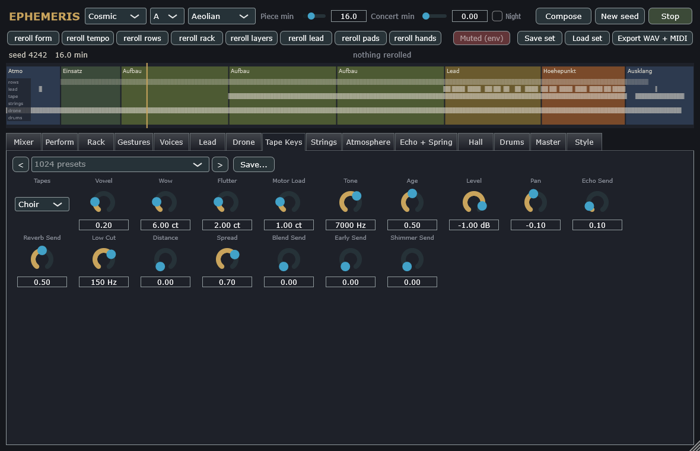
A tape keyboard, synthesised: every key has its own strip of tape, with its own small detune, level and onset lag, played by one capstan whose speed wanders (wow and flutter) and sags a little under many keys. A tape runs out after eight seconds, as the instrument's did. Three sets: a choir of several singers through the formants of a sung vowel, strings, and flute. Age puts more of the machine's character into the sound; the tape set can change between pieces.
Spread widens the mono keyboard without colouring it: the side is the keyboard through a chain of all-passes whose phase turns at corners spread over the band, added on one side and taken away on the other, so the two sides differ in phase, not in tone, and their sum -- what a mono speaker plays -- is the keyboard alone. At the default 0.7 the correlation of the two sides is about 0.35: wide, with a middle the chords stand on.
| Control | Key | Range | Default |
|---|---|---|---|
| Tapes | tape.set | Choir, Strings, Flute | Choir |
| Vowel | tape.vowel | 0 .. 1 | 0.2 |
| Wow | tape.wow | 0 .. 30 ct | 6 ct |
| Flutter | tape.flutter | 0 .. 10 ct | 2 ct |
| Motor Load | tape.sag | 0 .. 5 ct | 1 ct |
| Tone | tape.tone | 1500 .. 16000 Hz | 7000 Hz |
| Age | tape.age | 0 .. 1 | 0.5 |
| Level | tape.level | -60 .. 6 dB | -1 dB |
| Pan | tape.pan | -1 .. 1 | -0.1 |
| Echo Send | tape.echo | 0 .. 1 | 0.1 |
| Reverb Send | tape.reverb | 0 .. 1 | 0.5 |
| Low Cut | tape.low_cut | 10 .. 500 Hz | 150 Hz |
| Distance | tape.distance | 0 .. 1 | 0 |
| Spread | tape.spread | 0 .. 1 | 0.7 |
| Blend Send | tape.blend | 0 .. 1 | 0 |
| Early Send | tape.early | 0 .. 1 | 0 |
| Shimmer Send | tape.shimmer | 0 .. 1 | 0 |
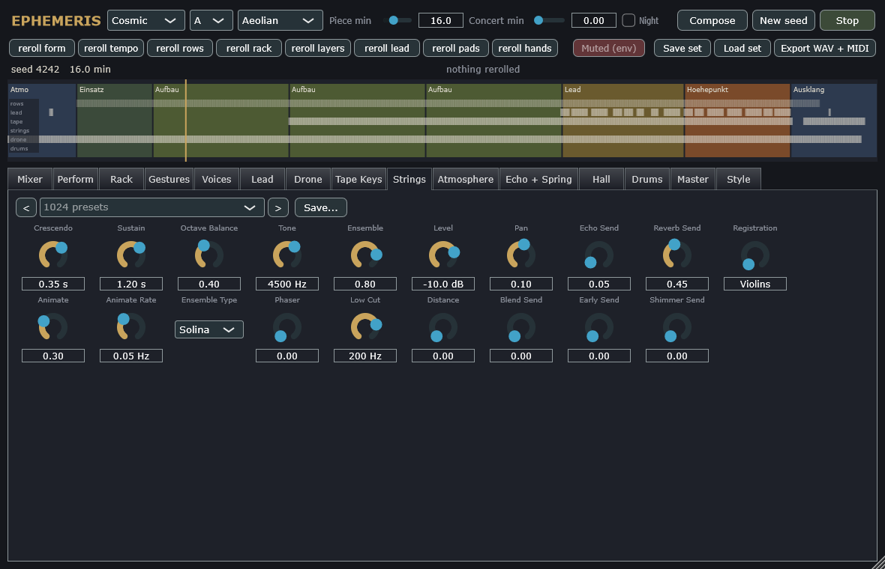
A string machine of the seventies, after the example of Waldorf's Streichfett: top-octave generators divided down into five registers per key -- sawtooths at 16', 8' and 4', squares at 8' and 4' -- through an ensemble of bucket-brigade delays swept by a slow and a fast modulation. Keys glide from where they were when a chord is stolen, as the machine's did.
Registration morphs continuously through eight mixes of the registers: Violins, Violas, Cellos, Basses, Full, Hollow, Brass and Organ, each with its own brightness and all equally loud. Animate lets a slow sine move the registration by itself, up to three and a half mixes either way at the Animate Rate, so the blend of the voices wanders under a held chord; the composer's hands move the registration now and then as well. Octave Balance tilts the footages towards the low or the high ones. Ensemble Type chooses the chorus: Solina (three lines, a slow and a fast sweep), Chorus (two lines, one sweep) or Wide (three longer, deeper lines, spread wider). Phaser sends the machine through four swept all-passes, the classic swirl of strings through a phase shifter.
| Control | Key | Range | Default |
|---|---|---|---|
| Crescendo | strings.attack | 0.005 .. 3 s | 0.35 s |
| Sustain | strings.release | 0.05 .. 6 s | 1.2 s |
| Octave Balance | strings.feet | 0 .. 1 | 0.4 |
| Tone | strings.tone | 800 .. 12000 Hz | 4500 Hz |
| Ensemble | strings.ensemble | 0 .. 1 | 0.8 |
| Level | strings.level | -60 .. 6 dB | -10 dB |
| Pan | strings.pan | -1 .. 1 | 0.1 |
| Echo Send | strings.echo | 0 .. 1 | 0.05 |
| Reverb Send | strings.reverb | 0 .. 1 | 0.45 |
| Registration | strings.registration | 0 .. 7 | 0 |
| Animate | strings.animate | 0 .. 1 | 0.3 |
| Animate Rate | strings.animate_rate | 0.01 .. 1 Hz | 0.05 Hz |
| Ensemble Type | strings.ensemble_type | Solina, Chorus, Wide | Solina |
| Phaser | strings.phaser | 0 .. 1 | 0 |
| Low Cut | strings.low_cut | 10 .. 500 Hz | 200 Hz |
| Distance | strings.distance | 0 .. 1 | 0 |
| Blend Send | strings.blend | 0 .. 1 | 0 |
| Early Send | strings.early | 0 .. 1 | 0 |
| Shimmer Send | strings.shimmer | 0 .. 1 | 0 |
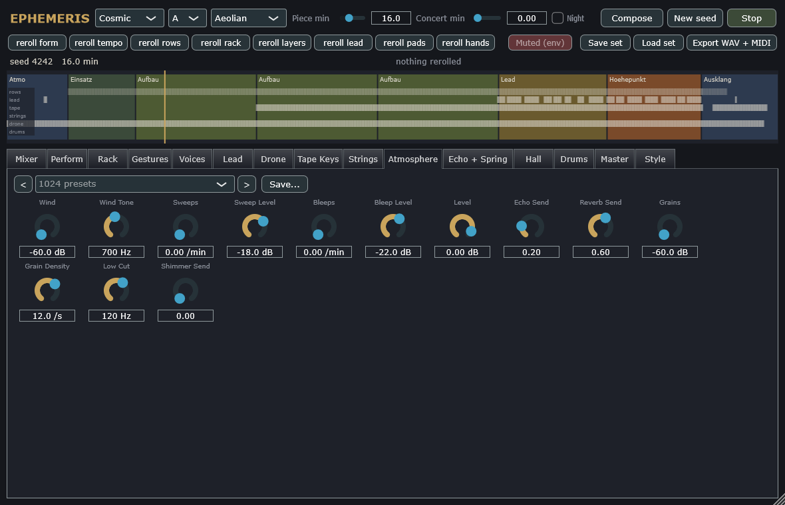
Wind (filtered noise in a moving band), slow sweeps, and bursts of sample-and-hold bleeps on the notes of the scale: the space at the start of a piece and in the bridges, and the stars over the builds.
Grains is a granular cloud: short tones, each a sine under a soft window of 40 to 250 ms, on the notes of the scale over the current root two to three octaves up, each at its own place in the stereo field, as many per second as Grain Density says. A piece has the cloud with the style's chance (the Style page); the hands then raise it in the atmosphere, the bridges and the coda, and take it away when the rows come in.
| Control | Key | Range | Default |
|---|---|---|---|
| Wind | atmos.wind | -60 .. 0 dB | -60 dB |
| Wind Tone | atmos.wind_tone | 150 .. 4000 Hz | 700 Hz |
| Sweeps | atmos.sweeps | 0 .. 6 /min | 0 /min |
| Sweep Level | atmos.sweep_level | -60 .. 0 dB | -18 dB |
| Bleeps | atmos.bleeps | 0 .. 12 /min | 0 /min |
| Bleep Level | atmos.bleep_level | -60 .. 0 dB | -22 dB |
| Level | atmos.level | -60 .. 6 dB | 0 dB |
| Echo Send | atmos.echo | 0 .. 1 | 0.2 |
| Reverb Send | atmos.reverb | 0 .. 1 | 0.6 |
| Grains | atmos.grains | -60 .. 0 dB | -60 dB |
| Grain Density | atmos.grain_density | 1 .. 40 /s | 12 /s |
| Low Cut | atmos.low_cut | 10 .. 500 Hz | 120 Hz |
| Shimmer Send | atmos.shimmer | 0 .. 1 | 0 |
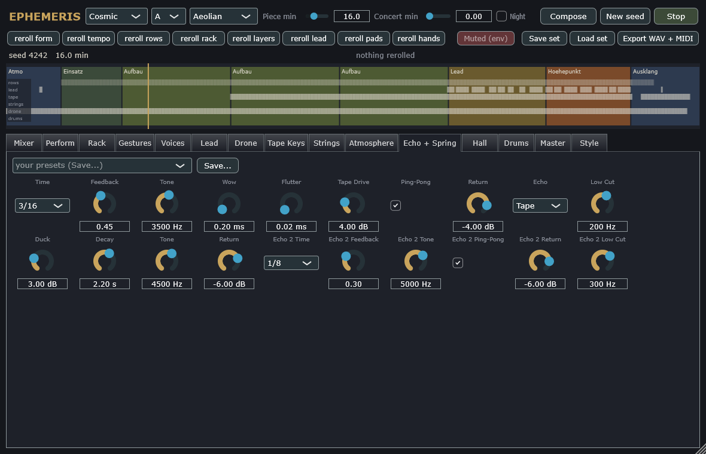
A tape echo with a moving read head -- wow, flutter, saturation and loss of highs in the feedback -- synchronised to the tempo, with a ping-pong option; its feedback can run into self-oscillation, which the echo throw uses. Springs are built into it, as in the tape echoes of the time: they take the echo's send and return beside it. The composer keeps the bass and the pads out of the echo -- the bass dry, the tape keys and the strings in the hall only -- and the hands lean the feedback high in the quiet parts of a piece and low at the peak. Low Cut is a high pass inside the loop, so every repeat is thinner than the one before, as a distant sound is; Duck lowers the return (of both echoes) while the rows play. The repeats of both echoes sit at about 70 % of the stereo base rather than hard left and right, so the middle keeps a share of each and the ping-pong survives in mono.
Echo switches the same send to a bucket-brigade delay instead of the tape: an analogue delay of 4096 stages as in the pedals of the late seventies. Its clock runs slower the longer the delay is set, and its filters have to follow the clock, so the longer the echo, the darker its repeats; the clock wanders slowly (Wow sets how far), and the compander saturates and hisses faintly in the loop. Time, feedback, tone, drive and ping-pong work as on the tape.
Echo 2 is a second, cleaner tape echo on a send of its own (the rows' Echo 2 Send), with its own time, feedback, tone, ping-pong and return; its repeats go into the hall as the first echo's do. It lets each layer of the sequence have its own delay: the main sequence on the first echo's dotted eighths, the other counter rows on the second in eighths or quarter triplets (1/4T, which both echoes offer), as the composer draws it for each piece.
| Control | Key | Range | Default |
|---|---|---|---|
| Time | echo.time | 1/16, 1/8, 3/16, 1/4, 3/8, 1/2, 1/4T | 3/16 |
| Feedback | echo.feedback | 0 .. 1.1 | 0.45 |
| Tone | echo.tone | 800 .. 12000 Hz | 3500 Hz |
| Wow | echo.wow | 0 .. 4 ms | 0.2 ms |
| Flutter | echo.flutter | 0 .. 0.5 ms | 0.02 ms |
| Tape Drive | echo.drive | 0 .. 18 dB | 4 dB |
| Ping-Pong | echo.pingpong | off / on | on |
| Return | echo.return | -60 .. 6 dB | -4 dB |
| Echo | echo.type | Tape, BBD | Tape |
| Low Cut | echo.low_cut | 20 .. 1000 Hz | 200 Hz |
| Duck | echo.duck | 0 .. 12 dB | 3 dB |
| Control | Key | Range | Default |
|---|---|---|---|
| Decay | spring.decay | 0.3 .. 8 s | 2.2 s |
| Tone | spring.tone | 1500 .. 9000 Hz | 4500 Hz |
| Return | spring.return | -60 .. 12 dB | -6 dB |
| Control | Key | Range | Default |
|---|---|---|---|
| Echo 2 Time | delay.time | 1/16, 1/8, 3/16, 1/4, 3/8, 1/2, 1/4T | 1/8 |
| Echo 2 Feedback | delay.feedback | 0 .. 1 | 0.3 |
| Echo 2 Tone | delay.tone | 800 .. 12000 Hz | 5000 Hz |
| Echo 2 Ping-Pong | delay.pingpong | off / on | on |
| Echo 2 Return | delay.return | -60 .. 6 dB | -6 dB |
| Echo 2 Low Cut | delay.low_cut | 20 .. 1000 Hz | 300 Hz |
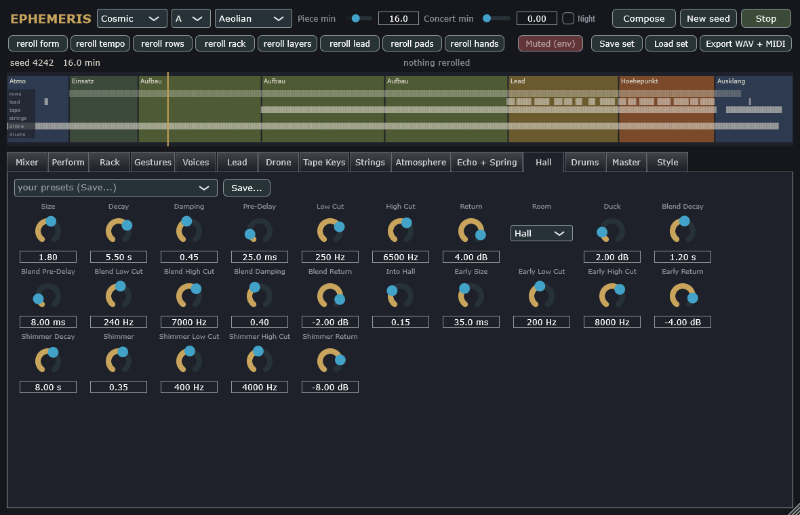
A long, dark hall (an eight-line feedback delay network) with its size, decay, damping, pre-delay and the band it returns -- by default 250 Hz to 6.5 kHz, so the hall adds space without mud or glare. The composer lets its decay grow in the atmosphere, the bridges and the coda and shrink by 40 % at the peak, and sets the pre-delay to a 64th note at the piece's tempo (32 ms at 118 BPM), which keeps the dry sounds in front of their room. Duck lowers the hall's return by up to that many dB while the rows play, so the tail blooms in the gaps and steps back under the notes.
The blend room is a second, short plate (Blend Decay about a second, a few ms of pre-delay, 240 Hz to 7 kHz) on a send of its own (Blend Send on the rows, the lead, the drone, the tape keys, the strings and the drums). Into Hall sends a share of its return on into the hall, so the far room sounds like the near one going on, not like a second place -- the serial far space of the dark-ambient practice. The composer puts the second layer there -- the counter rows, the lead, the drums -- with only a little hall; the pads, the drone and the atmosphere stay in the hall, the bass stays dry; at the peak the feed into the hall drops to 5 %, where the far room would fill up. Both returns are ducked by the rows alike.
With the early reflections (send A) and the shimmer (send D) the four rooms of the production guide are complete. The early reflections are a room without its tail: twelve reflections a side within Early Size (35 ms), 200 Hz to 8 kHz -- distance and glue for the counter rows, the lead and the drums, with nothing that smears. The shimmer is the effect hall: a long plate (Shimmer Decay, 8 s) whose output, shifted up an exact octave, is fed back into it (Shimmer, 0.35), so every round of the tail is an octave brighter and fainter; 400 Hz to 4 kHz. The composer opens it for the drone, the atmosphere and the tape keys in the atmosphere, the bridges and the coda, and closes it while the machine runs. Being an octave, it never detunes anything.
Room switches the same send to a plate instead: Dattorro's plate reverberator (1997) -- four diffusers and a tank of two halves that feed each other, each with a slowly moving all-pass, a damping low pass and the decay -- denser and brighter than the hall and without a room's early reflections, the sound of the plates on the records of the seventies. Decay, damping, pre-delay and the band work on it as well; its return is matched to the hall's level, so the switch changes the room, not the loudness.
| Control | Key | Range | Default |
|---|---|---|---|
| Size | reverb.size | 0.3 .. 3 | 1.8 |
| Decay | reverb.decay | 0.3 .. 20 s | 5.5 s |
| Damping | reverb.damping | 0 .. 1 | 0.45 |
| Pre-Delay | reverb.predelay | 0 .. 200 ms | 25 ms |
| Low Cut | reverb.lowcut | 40 .. 500 Hz | 250 Hz |
| High Cut | reverb.highcut | 1000 .. 20000 Hz | 6500 Hz |
| Return | reverb.return | -60 .. 12 dB | 4 dB |
| Room | reverb.type | Hall, Plate | Hall |
| Duck | reverb.duck | 0 .. 12 dB | 2 dB |
| Control | Key | Range | Default |
|---|---|---|---|
| Blend Decay | blend.decay | 0.3 .. 4 s | 1.2 s |
| Blend Pre-Delay | blend.predelay | 0 .. 60 ms | 8 ms |
| Blend Low Cut | blend.low_cut | 60 .. 800 Hz | 240 Hz |
| Blend High Cut | blend.high_cut | 1500 .. 16000 Hz | 7000 Hz |
| Blend Damping | blend.damping | 0 .. 1 | 0.4 |
| Blend Return | blend.return | -60 .. 6 dB | -2 dB |
| Into Hall | blend.into_hall | 0 .. 0.5 | 0.15 |
| Control | Key | Range | Default |
|---|---|---|---|
| Early Size | early.size | 10 .. 80 ms | 35 ms |
| Early Low Cut | early.low_cut | 60 .. 800 Hz | 200 Hz |
| Early High Cut | early.high_cut | 2000 .. 16000 Hz | 8000 Hz |
| Early Return | early.return | -60 .. 6 dB | -4 dB |
| Control | Key | Range | Default |
|---|---|---|---|
| Shimmer Decay | shimmer.decay | 2 .. 20 s | 8 s |
| Shimmer | shimmer.amount | 0 .. 0.6 | 0.35 |
| Shimmer Low Cut | shimmer.low_cut | 100 .. 1500 Hz | 400 Hz |
| Shimmer High Cut | shimmer.high_cut | 1500 .. 12000 Hz | 4000 Hz |
| Shimmer Return | shimmer.return | -60 .. 6 dB | -8 dB |
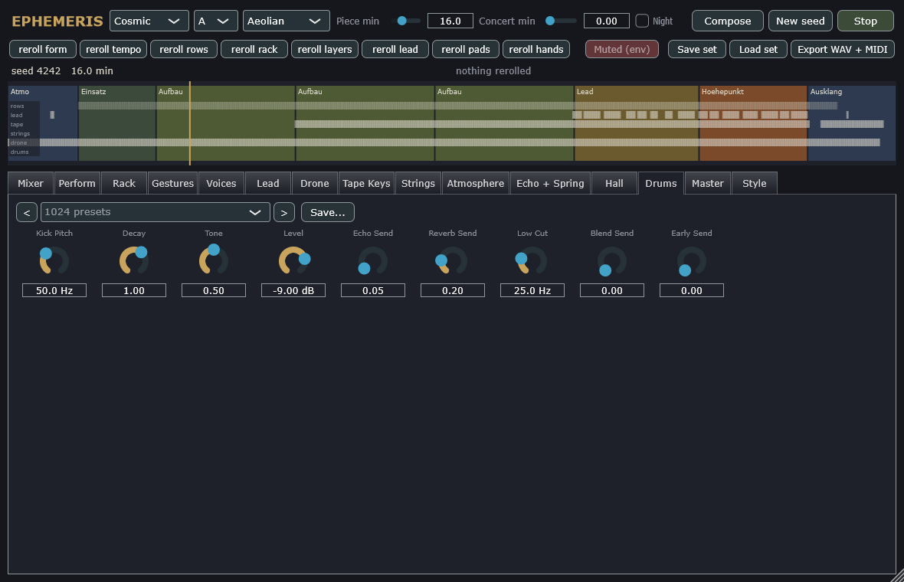
A small analogue kit for the styles that have drums: kick, snare, hats, toms tuned to the root, rim and shaker, with patterns per style. The kit comes late in a piece, from the second build to the end of the peak, and never before 30 % of the piece or after 90 %: the sequence is there before it and stays after it.
Before the kit, a pulse carries the sequence in most pieces: a soft kick four to the floor in Melodic and Modern, a heartbeat in Cosmic, a slow beat on one and three in Drift, a low tom once a bar in Doom. It comes with the second build (not before a fifth of the piece) and makes way for the kit or the breakdown; Melodic has it in four pieces out of five, Drift in one out of three.
| Control | Key | Range | Default |
|---|---|---|---|
| Kick Pitch | drums.kick_hz | 35 .. 80 Hz | 50 Hz |
| Decay | drums.decay | 0.3 .. 2 | 1 |
| Tone | drums.tone | 0 .. 1 | 0.5 |
| Level | drums.level | -60 .. 6 dB | -9 dB |
| Echo Send | drums.echo | 0 .. 1 | 0.05 |
| Reverb Send | drums.reverb | 0 .. 1 | 0.2 |
| Low Cut | drums.low_cut | 10 .. 500 Hz | 25 Hz |
| Blend Send | drums.blend | 0 .. 1 | 0 |
| Early Send | drums.early | 0 .. 1 | 0 |
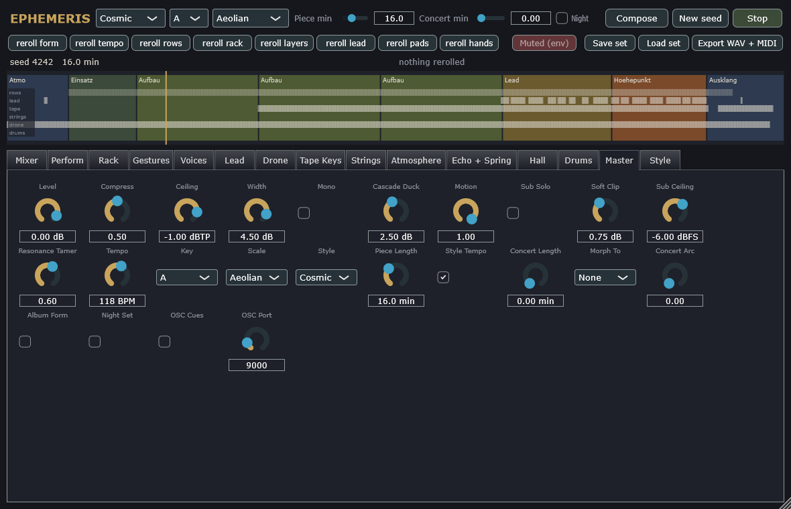
The master: its level, a gentle bus compressor that keeps the music's dynamics (a ratio of at most 1.5), and a true-peak limiter as protection at -1 dBTP. Before them the mix bus removes DC and subsonics under 20 Hz, keeps everything under 100 Hz in mono whatever its pan, and widens what lies above 300 Hz by Width (dB of side) -- never so far that the side comes within 3 dB of the mid, so the correlation stays positive and the mix survives in mono. Mono sums both sides after the limiter, to check the mix as a small speaker would play it. Soft Clip rounds the peaks above the ceiling into at most that many dB before the limiter (with anti-aliasing), so short ratchets do not make the limiter work; quieter material passes untouched. Sub Ceiling holds the band under 80 Hz on its own under that level (a Linkwitz-Riley split), so the sub never pushes the whole mix into the limiter. The composer moves the level along the form instead of compressing it -- the spaces 3 dB under the peak, the entry and the breakdown 1.5 dB -- and the width too: widest in the spaces, narrow where the dry bass comes in, growing again with the layers; while the lead plays, the tape keys and the strings step back 3 dB.
The styles are levelled to the loudness a streamed release is played at (EBU R128, measured with the offline renderer on ten-minute pieces): Cosmic, Melodic and Modern about -15 LUFS integrated, Doom and Drift about -17.5; the loudest three seconds around -12 LUFS, the true peak at -1 dBTP, the peak-to-loudness ratio 11 to 14 dB and the loudness range 8 to 13 LU -- the dynamics are the product. eph_render prints these figures for everything it renders, with the stereo correlation and how far the side lies under the mid. Below, the composer's settings -- the style, key, scale, tempo, lengths and whether the style chooses the tempo -- which the top bar also shows.
Album Form makes a concert an album: an interlude of three to five minutes between the long pieces -- no rows, only the drone, a slow chord every 16 to 32 bars on the strings or the tape keys, the atmosphere with its grains, a longer hall and the open fifth at the end -- the piece where the concert's middle falls the darkest (Phrygian, darker voices, a row more at the peak), and the last one ethereal (Dorian, a longer hall, a row fewer, no drums, a quieter lead). Without it a concert is what it was.
Motion keeps the depth awake: a spectrum that does not change for twenty seconds loses its depth to the ear. The pads' levels move by a few tenths of a dB within a second or two; their hall sends, the strings' tone and the echo's feedback over 13 to 30 seconds; the atmosphere swells by 6 dB over 41 seconds -- periods that never lock into the sequence's cycles, so foreground and background do not breathe together. In the atmosphere, the bridges and the coda, where no sequence plays, a near event sounds now and then: a lead fragment of one to three notes, 20 to 90 seconds apart. Sub Solo leaves only what lies under 80 Hz, for checking the bottom of the mix; Mono and Sub Solo are for listening and change nothing that is exported unless they are on.
Exports (the plugin's and eph_render's) end with twenty seconds of the rooms after the last note, faded in over two seconds and out over the last ten, never linearly, so the last tail never breaks off. eph_render --archive writes an archive master besides: no limiter, 24 bit, the whole scaled to a true peak of -3 dBTP (it renders twice). The report adds the crest factor (true peak over RMS, 17 to 20 dB for the styles; 12 is the least that keeps the transients) and, with --stems, the correlation of each stem: the rows are mono points (1.0), the tape keys spread by all-pass decorrelation (about 0.35), the rooms enveloping (about 0.2).
OSC Cues sends what the score knows to a visualiser such as Kaleidoscope, over UDP at the OSC Port, to the machine named by the environment variable EPH_CUE_HOST (this machine without it): every beat with the tempo (/eph/beat), every section with its phase (/eph/phase), every new root (/eph/key) and every conjunction of the rows with the share of the running rows that meet (/eph/conjunction). Each cue leaves when its sound is heard, not when it is composed.
| Control | Key | Range | Default |
|---|---|---|---|
| Level | master.level | -60 .. 6 dB | 0 dB |
| Compress | master.compress | 0 .. 1 | 0.5 |
| Ceiling | master.ceiling | -6 .. 0 dBTP | -1 dBTP |
| Width | master.width | -6 .. 6 dB | 4.5 dB |
| Mono | master.mono | off / on | off |
| Cascade Duck | master.cascade | 0 .. 6 dB | 2.5 dB |
| Motion | master.motion | 0 .. 1 | 1 |
| Sub Solo | master.sub_solo | off / on | off |
| Soft Clip | master.clip | 0 .. 2 dB | 0.75 dB |
| Sub Ceiling | master.sub_ceiling | -18 .. 0 dBFS | -6 dBFS |
| Resonance Tamer | master.tame | 0 .. 1 | 0.6 |
| Control | Key | Range | Default |
|---|---|---|---|
| Tempo | compose.bpm | 60 .. 160 BPM | 118 BPM |
| Key | compose.key | C, C#, D, D#, E, F, F#, G, G#, A, A#, B | A |
| Scale | compose.scale | Aeolian, Dorian, Phrygian, Harmonic Minor, Minor Pentatonic, Mixolydian, Lydian, Locrian | Aeolian |
| Style | compose.style | Cosmic, Doom, Melodic, Modern, Drift | Cosmic |
| Piece Length | compose.piece_minutes | 4 .. 40 min | 16 min |
| Style Tempo | compose.style_tempo | off / on | on |
| Concert Length | compose.concert_minutes | 0 .. 720 min | 0 min |
| Morph To | compose.morph_to | None, Cosmic, Doom, Melodic, Modern, Drift | None |
| Concert Arc | compose.concert_arc | 0 .. 1 | 0 |
| Album Form | compose.album | off / on | off |
| Night Set | compose.night_set | off / on | off |
| Control | Key | Range | Default |
|---|---|---|---|
| OSC Cues | cue.enabled | off / on | off |
| OSC Port | cue.port | 1024 .. 65535 | 9000 |
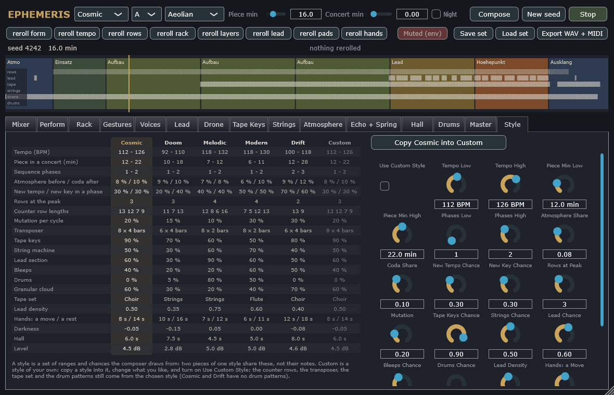
The five style profiles side by side, the chosen one lit. A style is not a sound but a set of ranges and chances the composer draws from: the tempo, the length and the number of sequence phases, how much of the piece is atmosphere before the rows and after them, how often a later phase changes tempo or key, how many rows play at the peak and which lengths they are drawn from, how often a row mutates, how slowly the transposer moves, how often each layer comes in, how dense the lead is, how fast the hands move, how dark the voices are, how long the hall rings and how loud the piece is. Two pieces of one style share these, not their notes. The tempi and the levels were set after measuring reference recordings.
The sixth column is a style of your own. "Copy ... into Custom" takes the chosen style's numbers as a starting point; change what you like on the right, and turn on Use Custom Style: the composer then takes your numbers. The counter rows' lengths, the transposer, the tape set and the drum patterns still come from the chosen style -- Cosmic and Drift have no drum patterns, so there Drums Chance does nothing. Your style is saved with the set and the plugin's state, and a concert starts from it (and morphs from it).
| Control | Key | Range | Default |
|---|---|---|---|
| Use Custom Style | custom.use | off / on | off |
| Tempo Low | custom.bpm_low | 60 .. 160 BPM | 112 BPM |
| Tempo High | custom.bpm_high | 60 .. 160 BPM | 126 BPM |
| Piece Min Low | custom.minutes_low | 4 .. 40 min | 12 min |
| Piece Min High | custom.minutes_high | 4 .. 40 min | 22 min |
| Phases Low | custom.phases_low | 1 .. 4 | 1 |
| Phases High | custom.phases_high | 1 .. 4 | 2 |
| Atmosphere Share | custom.intro | 0 .. 0.3 | 0.08 |
| Coda Share | custom.coda | 0 .. 0.3 | 0.1 |
| New Tempo Chance | custom.new_tempo | 0 .. 1 | 0.3 |
| New Key Chance | custom.new_key | 0 .. 1 | 0.3 |
| Rows at Peak | custom.peak_rows | 1 .. 7 | 3 |
| Mutation | custom.mutation | 0 .. 1 | 0.2 |
| Tape Keys Chance | custom.tape | 0 .. 1 | 0.9 |
| Strings Chance | custom.strings | 0 .. 1 | 0.5 |
| Lead Chance | custom.lead | 0 .. 1 | 0.6 |
| Bleeps Chance | custom.bleeps | 0 .. 1 | 0.4 |
| Drums Chance | custom.drums | 0 .. 1 | 0 |
| Lead Density | custom.lead_density | 0.1 .. 1 | 0.5 |
| Hands: a Move | custom.hand_move | 2 .. 30 s | 8 s |
| Hands: a Rest | custom.hand_rest | 4 .. 40 s | 14 s |
| Darkness | custom.darkness | -0.5 .. 0.5 | -0.05 |
| Hall | custom.hall | 1 .. 15 s | 6 s |
| Level | custom.level | -12 .. 12 dB | 4.5 dB |